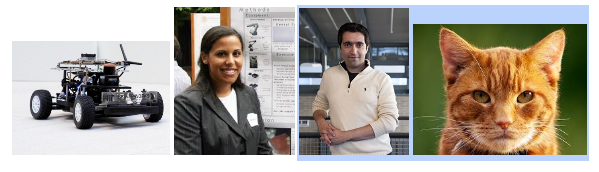
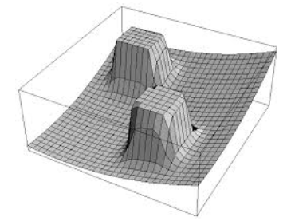

This page is dedicated to explaining what I have done and learned through Beaver Works’ 2016 summer program on autonomous vehicles. Beaver Works is a program that is run jointly through the Massachusetts Institute of Technology’s Engineering School and the nearby Lincoln Laboratory. Beaver Works focuses on creating project based learning and educational programs. This year was the first year that Beaver Works provided a summer program for rising high school seniors. As previously mentioned, this year’s Beaver Works’ Summer Program focused on the the programming and software that goes into making an autonomous vehicle. However, in addition to learning how to code an autonomous vehicle, we received daily presentations from guest speakers including people from MIT, Lincoln Laboratory, NASA’s Jet Propulsion Laboratory and an autonomous car manufacturing company in Germany. The subjects of these presentations ranged throughout all of the sciences and engineering disciplines, not just computer science and robotics. On a less technical side, we also attended a communications class twice a week for an hour in order to learn ways to be a more effective team member. The program spanned a four week period from July 11th to August 5th. However, there was a lot of pre program material to study so that students could come in with the necessary background knowledge to immediately start programming the race car. A normal day consisted of beginning at 9 AM with a technical lecture that related to the labs for the day and/or challenge for the week. These lectures would normally last about an hour and were often taught by the instructors coordinating the course. From 10 AM to 11:30 AM we would work on the first lab for the day. We would then listen to a guest speaker for about an hour. Between 12:30 PM and 1 PM we would eat lunch. After lunch we would work on lab 2 until approximately 2:45 PM. We would then work on lab 3 unti 5:00 PM when we left.

Chassis: Traxxas Rally 74076

1/10 Scale RC car 4 wheel drive Front Wheel Steering (Ackermann) Processor: Nvidia jetson TX1 Ubuntu for ARM Dual band Wi-Fi 2D LIDAR (Light Imaging, Detection and Ranging): -Hokuyo UST-10LX -Range: 0.06m to ~10m -Accuracy: +/-40mm -Scan angle of 270 degrees with 0.25 degree resolution (1081 steps) -Scen speed: 25ms (40Hz) -Ethernet communication, 12VDC A 3D Lidar is basically a set of 2D lidars stacked on top of each other. IMU (Inertial Measurement Unit)

-”Sparkfun 9 DOF “Razor” -MicroElectroMechanical (MEMS) three-axis accelerometer -MicroElectroMechanical (MEMS) three-axis gyroscope -MicroElectroMechanical (MEMS) three-axis AnisotropicMagnetoResistance (AMR) magnetometer IMUs are used to detect the vehicle's translational and angular acceleration (and thus can track translational and angular position and velocity). Uses accelerometers and gyroscopes. Some IMU’s also use magnetometers to detect magnetic fields. Passive Stereo Camera Sensorlabs ZED stereo camera Automatic (embedded) depth perception from .7 to 20 meters 110 degree FOV (Field of View) 4 videos modes 4416 x 1242 @ 15fps 3840 x 1080 @ 30fps 2560 x 720 @ 60 fps 1344 x 376 @ 100 fps
Active Stereo Camera Occipital Structure Sensor FOV

For the first three weeks, there was an overarching theme followed by a competition at the end of the week that tested how well we learned and implemented that theme into our code. The fourth week consisted of consolidating everything we learned and all of the code we developed from the previous weeks. The goal for the week was to showcase what we learned to the public through multiple challenges, including image detection as well as wall and obstacle avoidance. Below is a week by week overview of what we did in this course.
The theme for the first week was using the vehicle's laser scanner (called a LIDAR) to detect a nearby wall and follow it without hitting it. In this week we were given lectures about the hardware of our robot as well as the platform that we developed our code on, called the Robot Operating System (ROS). ROS is a platform used by academic roboticists to develop robots. We also received lectures on control systems, with an emphasis on the the PID controller (proportional–integral–derivative controller).

Source: Thursday Laboratory Exercise 1: Bang-Bang Control System Implementation
ROS was started at the Stanford Artificial Intelligence Laboratory. ROS is a collection of software that provides tools that are similar to that of operating systems. These tools include hardware abstraction, low-level device control, message-passing between processes (nodes), and package management. Processes can be viewed in a graph where one process may be receiving messages from many other processes and be sending messages to others.

Source: http://robohub.org/wp-content/uploads/2014/01/ros101-3.png

source: http://library.isr.ist.utl.pt/docs/roswiki/attachments/image_transport(2f)Tutorials(2f)ExaminingImagePublisherSubscriber/transport_graph_with_compressed.png
The above example shows “ROS topics” and “ROS nodes”. ROS topics are places where ROS publishers can publish (send) data to. ROS publishers are said to “talk” to ROS topics. Any node that listens (aka is subscribed to) a ROS topic will receive any data that was published to it. Any given node/program/process that a ROS programmer makes can initialize publishers and subscribers that can publish or subscribe to any number of topics. Each topic can only receive a specific message type (string, Bool, Int32, etc.)
Source: http://www.dfe.com/resources/faq_openloopvsclosedloop.html

https://en.wikipedia.org/wiki/Control_theory#/media/File:Feedback_loop_with_descriptions.svg PID Controller


Source: https://en.wikipedia.org/wiki/PID_controller
The study of control systems is very in depth; so much so that people usually only get PhD’s in certain classes of control systems. There are two main classes of control systems: “open-loop” and “closed loop” control systems. Closed loop control systems use sensors to approximate the state of the system and then send the data from the sensors to the controller so that the controller can adjust the system to a desired state. Errors from the sensors in the state approximation of a closed loop system often send the system into a downward spiral since an error to the controller may result in an erroneous action of the system, leading to an even further sensor errors. This is one of the reasons that a lot of research and mathematics has gone into developing these systems. On the other hand, in open loop systems, there is no feedback from the sensors. Source: https://en.wikipedia.org/wiki/Control_system
The PID controller is a specific type of closed loop controller. PID stands for Proportional action, Integral action, and Derivative action. The derivative aspect measures the rate of change of error with respect to time, where the error is the difference between a desired value (aka the “setpoint”) and the value determined by sensor data. If the sensor value approaches the desired value rapidly, the actuator is backed off early so that the error can coast to zero. If the sensor value begins to rapidly move away from the setpoint, then the actuator will work to bring t in proportion to the rate of change in error. For this reason the derivative term in a PID controller is normally negative.
Although not in the spirit of ROS, we decided that it would be easier to simply have the PID controller and the wall-following mechanism written in a single node since the challenge was relatively simple and there was no real need to delegate severals nodes to multiple people. However, because it was important for everyone to understand what was going, we all sat around one computer, suggesting ideas to be implemented into the node.
There were several wall following methods that we tried. We made sure that for each wall following method we made, we made it possible to very easily switch which wall (left or right) the vehicle would follow. Initially we attempted to use the single-point wall following method. What this meant is that we chose a single angle to use from the lidar scan as a reference to find out how far the wall was away from us and then controlled our position away from the wall using the PID. This method, however, is not particularly robust since the robot may not detect curves in the wall that appear in front of the position of the chosen laser screen. Our second attempt involved using a two point wall following method. This method entailed using some basic trigonometry to solve for the distance between the car and the wall.
We found that the two point wall following method worked the best. In the end, we set our chosen distance from the wall at 0.5 meters. We ended up only using a PD controller, with a P value of [] and a D value of []. (Note: Go to windows, get file) In the first week’s final challenge, our car made it to the “Elimination Round” where we ended up losing to car 63. Despite this, we received third of nine in the time trials.
Week 2 focused on image processing and computer vision. In this week we were given lectures on thresholding, convolutions, and custom ROS messages. The end of the week challenge for week 2 was to implement a program/programs that would allow the vehicle to differentiate a green sheet of paper from a red sheet of paper and then turn left or right depending on which color it saw. After turning, it would proceed to performing wall following on either a left or right wall (which again was dependent on the color of the paper).
A blob is defined as a region of an image where the pixels have some property or properties that are constant. There are two different type of blob detectors: differential methods and methods based on local extrema, aka, interest region operators.
My group decided to break the task up into three main nodes in addition to the emergency stop node. The architecture for our project looked similar to this:

In order to launch all of the nodes at once, we created a ros launch file. Ros launch files are a powerful tool that allow for multiple nodes to be started with a single command, allow parameters to be set, and allow for rostopic names to be changed so that rostopic naming conflicts between the set of nodes being launched can be mitigated.
The separate nodes that we decided to split our project up into allowed our group to split up the work among multiple people. It also gave us practice using ROS topics, subscribers, and publishers.
We had some difficulty adjusting our blob detector’s parameters to find the blobs. We also realized the changes in room lighting can affect whether or not the program would detect the blob. In order to find a better range of colors to threshold over, we took a picture of the blob we were trying to detect in the lighting that would be used in the end of the week challenge. We then used a photo editor (gimp) with the image to determine the specific HSV values for the pixels of the blob. We could then edit our blob detector’s parameters accordingly. This method ended up being successful.
Below is the picture we used to find the HSV values of the blob:

The image above also shows the square in which the vehicle is required to make its turn in, ensuring that the vehicle is adequately close to the blob. The image also shows how the walls are curved, thus testing the robustness of our wall follower.
Our vehicle sadly was not able to complete the challenge. However, we feel like this was only because we ran out of time to adjust the constants in our code, not because we had major conceptual errors or because we couldn’t implement the concepts correctly.
Instead of simply following a wall and detecting colors, the goal for this week was to create an algorithm that would avoid all obstacles and explore an environment completely autonomously. The challenge for the week was to implement programs that would allow the robot to explore an environment and avoid obstacles inside of it all while detecting splotches of color and specific images. The images we had to identify were the following:
The idea behind potential fields can be applied to computer vision to help robots avoid obstacles. The basic idea is that the robot detects how far objects are away from it (in our case, using a LIDAR) and then for each point detected, determines how much weight that point should have in deciding the robot’s steering direction. The amount of weight a point has is based on how far the point is away from the robot. Point further away will have less of an affect on the robot’s speed and steering angle according to an inverse square law. Due to this weighting of points based on distance, this algorithm parallels with the idea of potential fields from the study of electromagnetism. The detected points can be thought of as point charges. Before moving on, recall from physics that similar charges repel while opposite charges attract. With this idea in mind, we can assign the car a certain charge and have the points detected from the obstacles also be of a certain charge. These points can then be thought to create a repulsive force on the car. Also recall from physics that forces can be broken up into components. For the implementation of potential fields, the contributions from the detected points must be broken up into x and y components relative to the car. (A quick aside: The xy coordinate frame with respect to the robot is conventionally set up such that the positive x direction points in the direction of forward motion of the robot while the positive y direction points to the “left” of the robot.) Since some of the points will be in the left half of the car’s field of vision (FOV) and other’s will be on the car’s right, some of the y components of the forces will cancel, yielding a net force towards either the left or right side. This net force will be proportional to the car’s steering angle. Now if the X components of the forces are summed, we can find a value that will be proportional to the car’s velocity. One flaw in this physics analogy is that if the x components were summed, the net force would surely result in the robot wanting to drive backwards. For this reason, an artificial charge is hard coded into the algorithm behind the car so that the car is pushed forward. The idea of potential fields as they relate to robots can be shown through this image:
Source: http://www.cs.cmu.edu/~motionplanning/lecture/Chap4-Potential-Field_howie.pdf These mountains represent locations of obstacles. In the diagram, potential is analogous to height in the z direction. We can then compare the robot trying to move to an area of lower potential to the robot traveling down a gradient. The potential fields algorithm is simply trying to mimic the physics of the real world. With a correct potential fields algorithm, the robot should be constantly attempting to lower its potential just like any system in the physical world.
In order to detect the images, my team made openCV templates of the above images and then compared them to the images that were streaming from the zed camera. Our car explored the environment and avoided obstacles using a potential field algorithm.
Our team was not able to successfully implement the image detection. However, we were able to implement blob detection which included reporting the shape and color of the blobs. Unfortunately, our group was not able to participate in the end of the week challenge because there were delays in the schedule and our team was scheduled for the last place.
The goal of week 4 was to consolidate all of our learning from the past three weeks by implementing code for two “tech challenges” and a “grand prix.” The first tech challenge involved performing a task similar to the one required from week three’s exploring challenge. For this challenge, we had to travel around an enclosure detecting images and recording what images we found. We had to differentiate between several different colors and shapes of blobs and publish each blob’s color and shape to a specified topic. The second tech challenge involved a task similar to the one from week two where we had to detect either a red or green blob and then have the robot make a movement decision accordingly. This challenge took place on a section of the track that would also be used in the grand prix. In this section there was a junction: either the vehicle could continue moving in a straight path or it could turn to the right. However, about the junction there was placed either a green or red blob. If the blob was green, the car should have continued moving straight since the straight-ahead path was much shorter than the path that required a right turn. However, if the blob was red, the car should have taken the right path, since a red blob indicated that the short cut path was blocked and that if the car continued down the straight path, it would have reached a deadend. As mentioned above, this challenge was not only a tech challenge, but it was also part of the skills tested by the grand prix. The grand prix was a long course that tested how well the cars could navigate between two walls. The competition began with a set of three time trials for each team. Teams that completed all three time trials were placed in bracket one, teams that completed two time trial runs were in the second bracket, teams that finished a single time trial were placed in the third bracket, and those that finished 0 time trials were placed in the fourth bracket. Then three races were held, one within each bracket, to determine the order of the cars at the start of the final grand prix. The bracket one cars were at the front and the bracket three cars were in the back.
For all three challenges, we used potential fields as our main navigation algorithm. For tech challenge 2 and the corresponding part in the grand prix, we would over ride the potential field algorithm for a few seconds with a hard coded stirring message in order to turn right if we saw a red blob.
We found that the potential field algorithm worked extremely well when there were few cars on the track with us. However, during the final two races of the grand prix, our car had trouble navigating as it would detect other cars which would throw off the potential feild navigation. We ended up not finishing the final race of the grand prix due to this. Despite this, we believe the parameters in our potential fields algorithm were tuned well since our vechile managed to earn second place in the time trials. Our implementation of the potential field override functionality also seemed to be effective since our car made the correct turn at the blob every time it got to that section of the track.
Our team ended up finishing 3rd place in the time trials, but did not finish in the One of the biggest problems for me during the camp was the fact that my computer was very slow while running the ROS software through a virtual machine. I dual botted my computer that was previously only running windows 10 with ubuntu 14.04 and then downloaded ROS indigo on it. Since then I have played around with the simulation tools in ROS and they run much faster than they do when I was running them through a virtual machine.
This camp encouraged me to major in computer science. My current plan is to major in computer science and electrical engineering, while taking additionally classes in physics. I find robotics particularly interesting, because if it is even remotely similar to this summer’s camp, I don’t think I would get bored. It is something I can definitely imagine myself doing as a career for 8+ hours everyday. I enjoyed how we could code for an hour or two, and then go test how our code worked very quickly in the real world, allowing us to take a break from our computer. I seriously enjoy the rapid prototyping and the mixing it up between the real world and the virtual world that is inherent to robotics. I also realized that computer science is great because you don’t need a lot of expensive hardware to test things in a lot of cases; instead you can just use a simulation (although having stuff work in the real world is definitely more interesting). So in this sense, you are not restrained by the time and money required to get the parts for a project as might be the case in many other fields; you can simply make a simulation to test your code and then apply the code to the real-world once the hardware comes in! Also, for a similar reason, computer science allows you to be as creative as you want to be and work as quickly as you want. This all is not to mention that making a program is a great mental exercise that often requires knowledge from mathematics and other science fields.